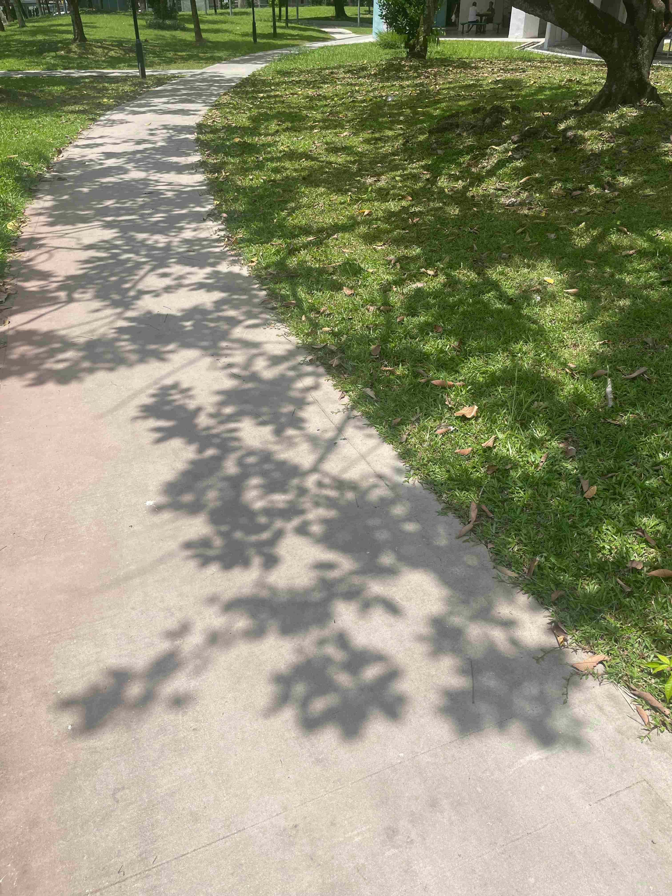

Summer☀
There’s something about the sky — its warmth, its light. A smile forms, a soft breath escapes. How wonderful it all feels.
“I never get tired of the blue sky.” - Vincent Van Gogh

“I never get tired of the blue sky.” - Vincent Van Gogh
It’s that golden hour, that rim of light that illuminates your face. Simmer in joy and remember you’re unapologetically alive.
Here’s sunny Singapore’s favourite garden — loved all year round. Well, it’s summer all year, so that checks out.